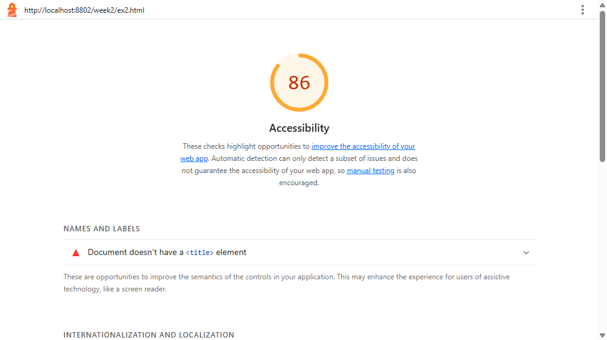
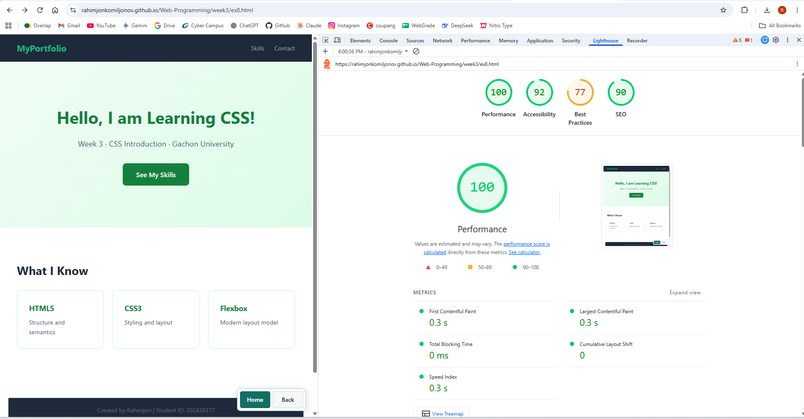

I ran Lighthouse (Accessibility) in Chrome DevTools on my site and fixed the pages that didn't score 100.
What I found
12 pages scored below 100 on my Week 2 and Week 3 exercises. The screenshots below are from my own Chrome, on the live site, and the URL is in the address bar of each one. Both the before and after screenshots use the same URLs.
I took screenshots for 4 pages. The other 8 pages (week2/ex4, week2/ex7, week3/ex1, ex2, ex4, ex5, ex6 and ex7) had the same missing title problem, and the Week 2 ones also had no lang. They score 100 now too.
Before and after
week2/ex2.html: 84 → 100
Problem: no title, no lang, no main landmark.

Before (84)After (100)
week2/ex3.html: 79 → 100
Problem: no title, no lang, links too small, no main landmark.
Before (79)After (100)
week3/ex3.html: 84 → 100
Problem: low contrast, no title, no main landmark.
Before (84)After (100)
week3/ex8.html: 92 → 100
Problem: low contrast in the footer.

Before (92)After (100)
What I changed (code)
These are the exact changes, with the file each one was made in. Each fix removes a failing Lighthouse audit.
01
Missing page title
document-title
Where: 11 pages: week2/ex2, ex3, ex4, ex7 and week3/ex1 to ex7
Problem: The pages had no <title>, so the browser tab and screen readers had nothing to announce as the name of the page.
Problem: These Week 2 files were bare fragments with no <html> tag, so there was no lang attribute (screen readers could not pick a pronunciation) and no <head> to hold a title.
Fix: Turned each one into a full document with <html lang="en">, a <head> with charset, viewport and title, and a <body>.
Beforeweek2/ex2.html
<h1>My Favourite Sport</h1>
<h2>Why I Love It</h2>
<p>I have played <strong>football</strong> ...</p>
<script src="../site-nav.js" defer></script>
Afterweek2/ex2.html
<!DOCTYPE html>
<html lang="en">
<head>
<meta charset="UTF-8">
<meta name="viewport" content="width=device-width, initial-scale=1.0">
<title>My Favourite Sport | Week 2</title>
</head>
<body>
<main>
<h1>My Favourite Sport</h1>
<h2>Why I Love It</h2>
<p>I have played <strong>football</strong> ...</p>
</main>
<script src="../site-nav.js" defer></script>
</body>
</html>
03
Low text contrast on the colour boxes
color-contrast
Where: week3/ex3.html
Problem: White labels on the red, amber, green and blue boxes measured between 2.14:1 and 3.76:1 in Lighthouse. Text needs at least 4.5:1.
Fix: Changed the label colour from white to black, which passes on all five boxes.
Where: the 22 Week 2 and Week 3 exercise pages that were edited
Problem: DevTools flagged "Document does not have a main landmark". Screen reader users could not jump straight to the content.
Fix: Wrapped the page content in a <main> element.
Beforeweek3/ex1.html
<body>
<h1>CSS is Beautiful</h1>
<p>With just a few lines of CSS ...</p>
</body>
Afterweek3/ex1.html
<body>
<main>
<h1>CSS is Beautiful</h1>
<p>With just a few lines of CSS ...</p>
</main>
</body>
07
Skip link
WCAG 2.4.1 Bypass Blocks
Where: every page that has a <main> (added once, in site-nav.js)
Problem: Keyboard users had to Tab through every link before reaching the content, and there was no way to skip them.
Fix: site-nav.js now adds a "Skip to main content" link at the top of every page. It stays off-screen until it gets keyboard focus.
Beforesite-nav.js
(() => {
const script = document.currentScript;
if (!script || !document.body) return;
const homeUrl = new URL('./index.html', script.src);
Aftersite-nav.js
(() => {
const script = document.currentScript;
if (!script || !document.body) return;
// Skip link for pages that do not ship their own (WCAG 2.4.1)
const main = document.querySelector('main');
if (main && !document.querySelector('.skip-link')) {
if (!main.id) main.id = 'main-content';
const skip = document.createElement('a');
skip.className = 'skip-link';
skip.href = '#' + main.id;
skip.textContent = 'Skip to main content';
document.body.prepend(skip);
}
const homeUrl = new URL('./index.html', script.src);